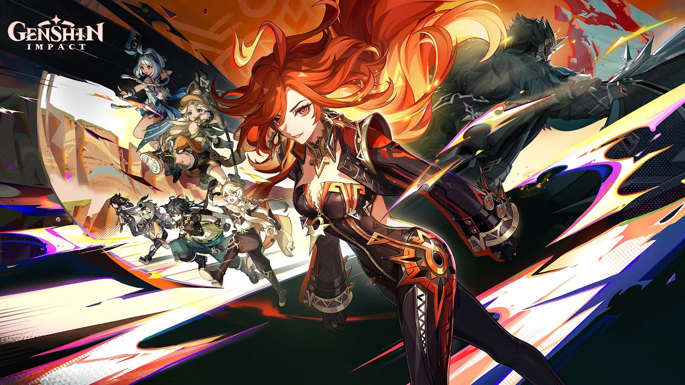

Alur Permainan

Genshin Impact adalah permainan yang bergenre dunia terbuka (open world) sekaligus bermain peran aksi. Pada permainan ini, pemain memungkinkan untuk mengendalikan salah satu
karakter yang dapat digantikan di dalam sebuah party (kelompok). Karakter-karakter yang ditukarkan dapat dilakukan dengan cepat selama melakukan kombat,
sehingga memungkinkan pemain untuk menggunakan kombinasi kemampuan dan serangan yang berbeda. Karakter yang
dapat memiliki kemampuan diperkuat dengan berbagai cara, seperti menaikkan level-nya secara langsung dan memperkuat artefak beserta senjata yang dapat
digunakan oleh seorang karakter. Selain berpetualang, pemain dapat mencoba berbagai tantangan untuk mendapatkan hadiah. Pemain dapat melawan raja dan tantangan berhadiah di seluruh Pulau Teyvat, tetapi hadiah tersebut didapatkan dengan menggunakan
mata uang yang disebut Original Resin. Menyelesaikan tantangan-tantangan tersebut dapat menambah kenaikan pemain dengan cara meningkatkan Adventure Rank, yang dapat membuka misi baru, tantangan, dan menaikkan World Level.
Perilisan
Perilisan seluruh dunia pada 28 September 2020 diumumkan pada 17 Agustus untuk platform PC dan seluler. Pada tanggal 28 Agustus, terungkap bahwa versi PlayStation 4 dirilis pada tanggal yang sama.
Permainan ini juga tersedia di PlayStation 5 melalui kompabilitas terbalik pada 11 November. Pada tanggal 28 April 2021, versi PlayStation 5 dari permainan ini dirilis, menampilkan visual yang ditingkatkan,
peningkatan waktu pemuatan, dan dukungan pengontrol DualSense. Sebuah versi Nintendo Switch sedang dalam pengembangan, meskipun belum ada tanggal rilis yang diumumkan.
Pada bulan Agustus 2019, miHoYo menghadirkan demo Genshin Impact yang dapat dimainkan pada stan PlayStation di pameran ChinaJoy 2019. Kemudian pada bulan September 2019, di pameran Tokyo Game Show, miHoYo
menunjukkan trailer permainan dengan dub bahasa Jepang.
Element
Karakter (playable characters) memiliki kemampuan untuk mengendalikan salah satu dari tujuh elemen (atau disebut unsur) alam, di antaranya adalah: Anemo (angin), Geo (tanah), Pyro (api), Hydro (air), Cryo (es), Electro (listrik), dan Dendro (tanaman yang hidup).
Ketika unsur-unsur tersebut bereaksi dengan yang lain, hasilnya memberikan macam-macam efek. Sebagai contoh, jika serangan Hydro mengenai suatu target, musuh akan menimbulkan efek status "Wet", dan bila selanjutnya dikenai dengan serangan Cryo, kedua efek status ini bergabung membekukan musuh, yang menghentikannya untuk melakukan aksi untuk sementara.
Masing-masing karakter juga diberikan dua kemampuan kombat yang unik, yaitu "Elemental Skill" dan "Elemental Burst". Elemental Skills adalah serangan dengan set cooldown yang dapat digunakan kapanpun, sedangkan Elemental Bursts adalah serangan ultimatum yang membiayai energi.
Kedua kemampuan ini membutuhkan pemain untuk mengumpulkan energi elemen yang cukup dalam rangka untuk menggunakannya. Tujuan utama alur permainan ini adalah memanipulasi elemen-elemen melalui kedua kemampuan kombat tersebut dari empat karakter di suatu party supaya menghasilkan berbagai reaksi elemen. Selain itu, kemampuan elemen tertentu diperlukan untuk memecahkan teka-teki di dalam dunia permainan tersebut.
Penghargaan
Pada tahun 2020, Genshin Impact berhasil meraih penghargaan Permainan Video Terbaik (Best Game) dan Permainan Video Pilihan Pengguna (User Choice Game) di Google Play Award 2020.
Genshin Impact juga berhasil meraih dua nominasi pada The Game Awards 2020 (TGA), yaitu kategori Permainan Video Mobile Terbaik (Best Mobile Game) dan Permainan Video Bermain Peran Terbaik (Best Role Playing).